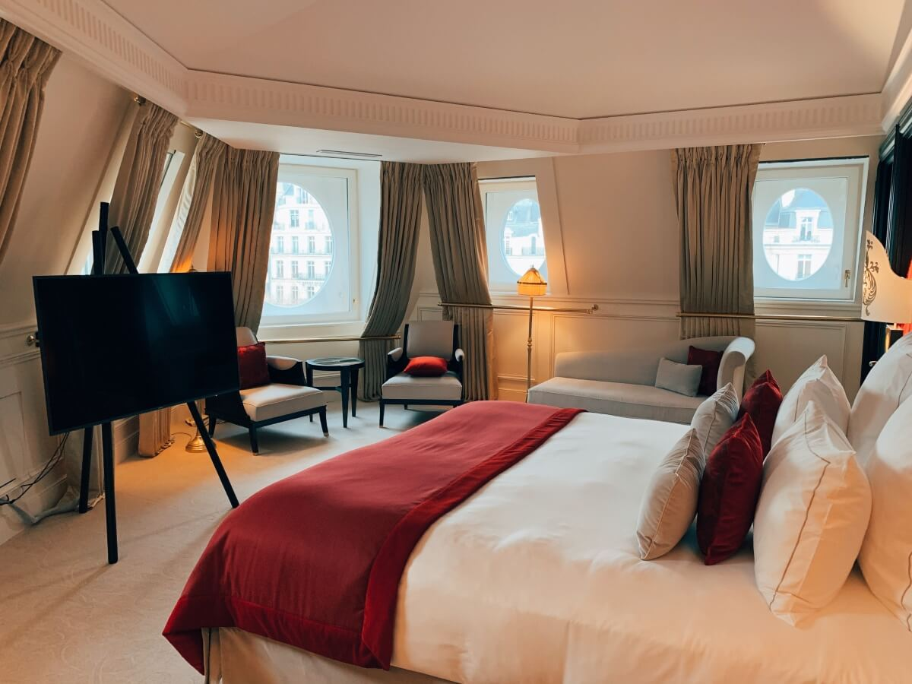
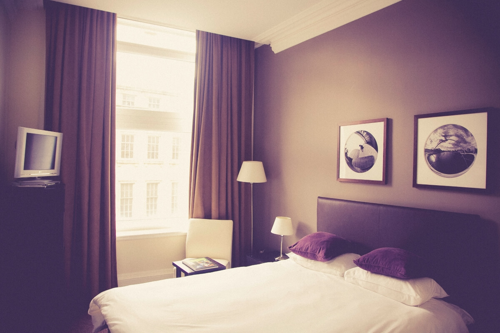

When happening vacation you would like something to be just perfect. You choose the very best place. You've a listing of products for you to do. You receive all things in order. Part of using this method is ensuring you are receiving the very best hotel. This can be done with various hotel guides. They may be available at numerous places and therefore are exist for you. 
The simplest spot to find hotel guides is on several websites that assist you to book your hotel. What this means is websites like velocity.com or hotels.com. These can help you choose the very best hotel to choose. It will explain all you need to know of the hotels you're searching at. They will explain the amount of stars expensive hotels has. They will explain the characteristics in every room, from microwave, dvd player, full kitchen as well as balconies if available. They'll even demonstrate pictures so that you can see exactly what the room itself appears like. Many of them may even demonstrate the vista you'll have whenever you watch out of the question. This is often helpful for the reason that you wouldn't like to obtain a hotel around the beach, which you'll pay more for, however only finish track of a look at another building. They'll even demonstrate the various things offered at your accommodation for example pools, spas, massage rooms, etc. You may also read reviews from individuals that have remained there to get advisable of what it's like. The good thing is, these websites are made to help you save money.
If you work with a travel agent, there are also expensive hotels guide through them. Your tour operator can there be to create you track of the right vacation that matches to your needs. They can let you know around the best hotels to remain in or what's incorporated inside your trip. Since edge in the game as a living, they're usually the very best someone to request relating to this. They really have to go to maintain their license, which belongs to are they all so great at the things they're doing. However, don't merely believe what they say make certain you perform a little homework on your own, especially if this sounds like the very first time you've used this tour operator. Make certain you're going to get precisely what they said would receive.
Locating a hotel is among many factors that get into planning the right vacation. You will find a multitude of locations you will find a hotel guide. You will get the data online with free streaming or undergo a tour operator who can provide you with their expertise around the best hotels for that area you'll be remaining. In either case, a great hotel helps to make the improvement in getting an incredible vacation and hotel guides can help you discover the perfect one.
First open to the public in 1898, the Westminster Hotel has been housing a broad cross section of northern Canada's most colourful characters.The history of the gold rush has come through these storied doors. There have been some changes through the years but the independent attitude of the north sits down in this hotel for their beverage.
The relaxed atmosphere, good company, and reasonable rates make the Westminster Hotel the residence of choice for travelers interested in shareing of Dawson's down-to-earth culture.
One of Dawson City's premiere venues for lively days and nights of partying, the Westminster Hotel is home to both the Snake Pit and a comfortable lounge where visitors are likely to catch live music. 
The Snake pit opens at 9am, Some mornings the coffee pot gets more action than the beer taps. In the heart of the Klondike the tavern is often the place to meet and greet the day.
The Lounge opens a few hours later, offering an ingeniously sloped pool table adjacent to a cozy corner of couches, with acres of table space ready to hold even the heaviest loads of libations, and plush chairs built to accept patrons of all sizes.
If you stay in one of our hotels, you should visit the nearby shopping centres and food courts. We provide a leaflet at our receptions where you can find all kinds of interesting things to do while you are in town. You can go to Viator to find activities that may interest you. If you want to just go shopping or find restaurants, you can use https://storebranch.com to find the nearest stores and their times.
We hope you enjoy your stay in our hotel and you are welcome back anytime in the future.